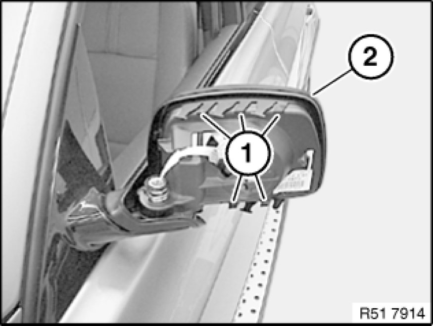
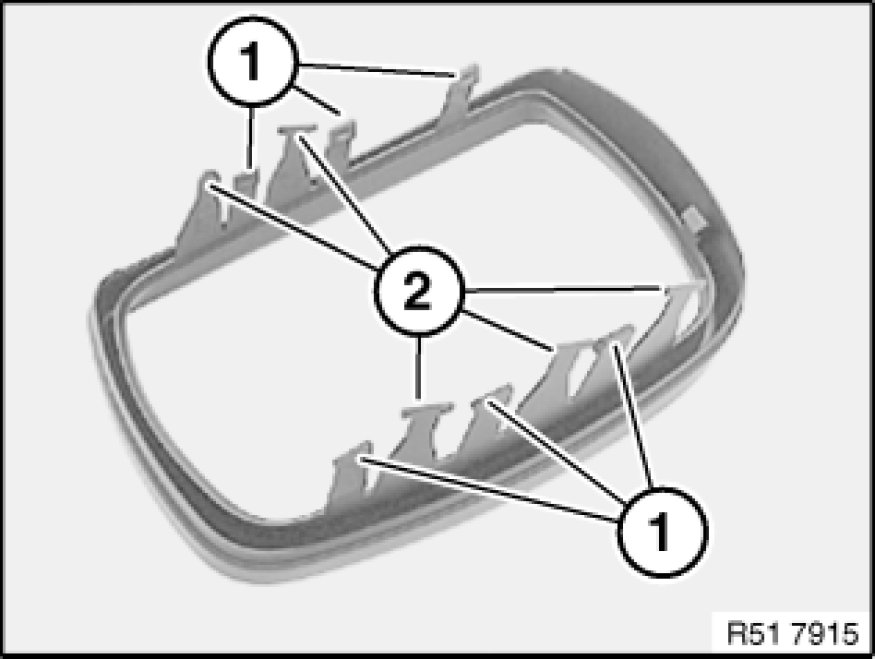

Removing and Installing/Replacing Retaining Ring on Left or Right Door Mirror
51 16 045 - Removing and installing/replacing retaining ring on left or right door mirror

Necessary preliminary tasks:
- Remove housing on door mirror Removing and Installing/Replacing Housing on Left or Right Door Mirror

Release catches (1) and remove retaining ring (2) towards rear.

Installation:
Catches (1 and 2) must not be damaged.
1 - Retaining ring catches on door mirror
2 - Retaining ring catches on housing